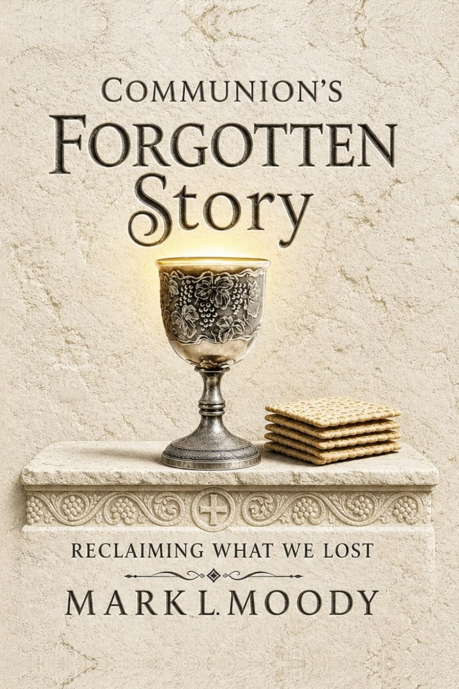

Supports the Kenya mission
Communion's Forgotten Story
Reclaiming What We Lost
We take the bread. We drink the cup. We remember Jesus. But for many of us, that's where the understanding stops. This book traces the Lord's Supper from its roots in Eden, through the Passover and the upper room, through the early church and into your hands today — written for Christians of every tradition, whether you call it Communion, the Eucharist, or the Lord's Supper.
Every copy purchased supports the mission work of the Ness family in Kenya. Read their story below.
Offered at a reduced price for churches and group leaders during four windows each year: January 5–14, March 1–10, August 20–29, and Black Friday week (Nov 27–Dec 6). No minimum order.